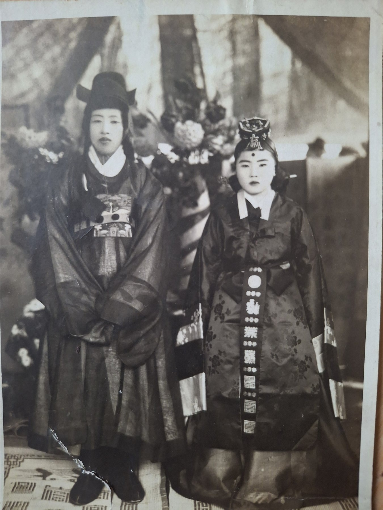
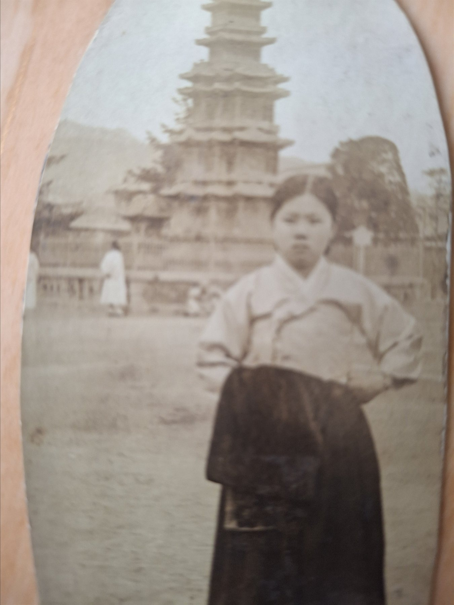
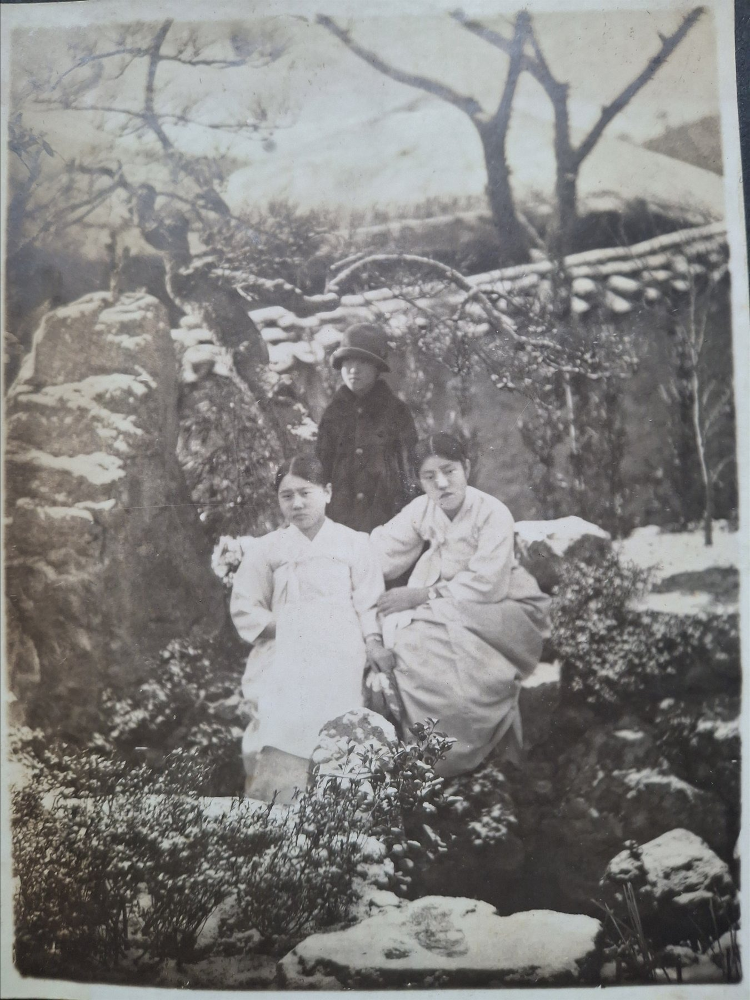

Shin Mun-ran — The Daughter-in-Law Who Left School Around 1930
The Lee Dong-beom Family of Hampyeong: A 128-Year Bond | Part 8
[EN] English edition · Translated from the Korean original · 한국어 원문
In Part 7, I introduced my grandfather Lee Sang-rae, whose name remains on the Gwangmyeong (光明) calligraphy. This time it is the story of his wife, my grandmother, Shin Mun-ran (申文蘭, 1912–2005).
She was the wife of Seok-am Lee Dong-beom's grandson. She married into the head family and kept the household for many years, but before that she was also a student at a girls' school in Gwangju.
1. Daughter-in-Law of the Head Family

According to family tradition, my grandmother was born in 1912 and married Lee Sang-rae in 1928, when she was about sixteen. A photograph of the two of them standing side by side in traditional wedding attire still survives.
Her place as daughter-in-law of the head family can also be seen in a family photograph of Lee Jae-seung. It shows my grandmother standing beside her parents-in-law together with her dongseo (the wife of her husband's brother), and appears to have been taken around the 1930s.

2. A Student at Gwangju Girls' School
According to family tradition, my grandmother was in the second class of Gwangju Public Girls' Higher Common School (광주공립여자고등보통학교; a descriptive translation of the name of a girls' secondary school of the colonial period), known for short as Gwangju Yeogobo, and continued her studies in Gwangju even after her marriage. Until the school's original register is checked, however, her class year and period of attendance remain family tradition.

A portrait of my grandmother taken in front of the stone pagoda in Tapgol Park in Seoul has also been handed down. In this photograph, which appears to date from around the late 1920s, she stands confidently in hanbok with a hand on her hip.

In fact, this photograph is also the profile picture of this blog. In the way she stands with her hand on her hip I see a firm stubbornness, and I chose it because I, her granddaughter, seem to take after her in that stubbornness at least.
3. Gwangju, Autumn 1929
At the end of October 1929, Japanese male students harassed Korean female students at Naju Station, and the clash spread on November 3 into large-scale student demonstrations in the city of Gwangju. This was the beginning of the Gwangju Student Independence Movement.
Students of Gwangju Yeogobo also took part in this movement, and in January of the following year the school expelled many students. The Chosun Ilbo of January 20, 1930, reported the expulsion of some forty students and wrote that the school had also called in parents and urged them to submit requests for voluntary withdrawal.
According to family tradition, my grandmother also left school around this time. The exact year and date of her withdrawal have not yet been confirmed. The story is that the school principal contacted her father-in-law, Lee Jae-seung, directly and demanded her withdrawal, and that my grandmother, who as a daughter-in-law found it hard to go against his wishes, finally gave up her studies.
According to family tradition, the female student involved in the Naju Station incident was in the same year as my grandmother and was her friend. Who that student was, and the relationship between the two, have not yet been confirmed in records.
4. Lee Ok, Her Sister-in-Law at the Same School
At the same time, Lee Ok (李玉, 1914–2000) also attended Gwangju Yeogobo; according to family accounts, she was Lee Sang-rae's younger sister and thus Shin Mun-ran's sister-in-law. Lee Ok received a Presidential Commendation in 2022 for her contributions related to the Gwangju Student Independence Movement; the circumstances of her expulsion and the related records are examined separately in a special edition.

5. Remaining Questions
My grandmother passed away in 2005 at the age of ninety-three. The years of birth and death in this piece are based on the family register transcript and materials of the bereaved family.
Putting this together also made clear the questions still to be confirmed: her period of attendance and date of withdrawal as recorded in the Gwangju Yeogobo register, the circumstances in which the principal contacted the family, the name of her friend in the Naju Station incident, and an official check of the family relationship with Lee Ok.
Until family stories are confirmed in records, I intend to keep writing tradition down clearly as tradition.
In the next part, I will continue with the story of the time my grandfather and grandmother lived through together.
Official interview, Kim Koo Museum & Library [Korean]
https://www.youtube.com/watch?v=NZlIOjAmNzg
See also
- Full archive (English): https://lsaru23-ai.github.io/hp-db-archive/en/
- Full archive (Korean): https://lsaru23-ai.github.io/hp-db-archive/
- X @hp_db_archive https://x.com/hp_db_archive
- Threads @hp_db_archive https://www.threads.com/@hp_db_archive
Previous
- Part 1: Who Was "Jinsa Lee"? — Kim Koo and the Lee Dong-beom Family of Hampyeong https://lsaru23-ai.github.io/hp-db-archive/en/post1.html
- Part 2: Why He Stayed Two Weeks — Hiding in Hampyeong, 1898 https://lsaru23-ai.github.io/hp-db-archive/en/post2.html
- Part 3: The 1946 Reunion and Gwangmyeong — A Bond Kim Koo Sought Out Again https://lsaru23-ai.github.io/hp-db-archive/en/post3.html
- Part 4: The Head Family House and the Lee Jae-hyeok House — 128 Years in Two Homes https://lsaru23-ai.github.io/hp-db-archive/en/post4.html
- Part 5: Seok-am Lee Dong-beom — The Life of "Jinsa Lee" https://lsaru23-ai.github.io/hp-db-archive/en/post5.html
- Part 6: Chun-gang Lee Jae-seung — The Eldest Son Who Carried On the Head Family https://lsaru23-ai.github.io/hp-db-archive/en/post6.html
- Part 7: Lee Sang-rae — The Grandson Whose Name Appears on Gwangmyeong https://lsaru23-ai.github.io/hp-db-archive/en/post7.html
Main references
[1] Chosun Ilbo, January 20, 1930, "Many Gwangju Yeogobo Students Expelled — Some Forty Students Expelled" (광주여고보생 다수 퇴학처분). [Korean]
[2] Ministry of Patriots and Veterans Affairs, press release on recognition of independence patriots for the 83rd Patriotic Martyrs' Day, November 15, 2022, pp. 19–21 (Lee Ok). [Korean]
[3] Yun Seon-ja, "The Participation of Gwangju Public Girls' Higher Common School Students in the Gwangju Student Independence Movement" (광주여자고등보통학교 학생들의 광주학생독립운동 참여), proceedings of the Honam Historical Society conference, 2022. [Korean]
[4] Family-held photographs, including the wedding photograph of Lee Sang-rae and Shin Mun-ran and the Gwangju Yeogobo group photograph.
[5] Family register transcript and Hampyeong Lee Clan Comprehensive Genealogy.
This piece distinguishes facts confirmed directly in documents from family tradition. My grandmother's attendance and the circumstances of her withdrawal are family tradition and will be supplemented as the school records are checked.
This English edition is a translation of the Korean historical archive. The Korean original remains the authoritative version. Documentary evidence, family recollections, and unresolved questions are distinguished throughout.
Chinese characters given in parentheses after names and source titles are supplied for identification; they are not quotations from the original documents unless shown in quotation marks.